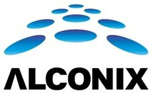

Trade Mark Journal No.2025/011 14 March 2025
WO0000001841543 (35)
Office of origin: Japan
Date of International Registration:13 December 2024
Date of designation in the UK:
13 December 2024

International priority date claimed: 14 June 2024
(Japan)
- Class 35
- Procurement services for others [purchasing goods and services for other businesses]; retail services or whole sale services for iron, steel and non-ferrous metals and their alloys; retail services or whole sale services for non-ferrous metals in foil or non-ferrous metal alloy powder; retail services or whole sale services for copper and its alloys; retail services or whole sale services for unprocessed natural resins; retail services or whole sale services for machines for manufacturing semi-conductors and their parts; retail services or whole sale services for lithium-ion battery, lithium secondary batteries and rechargeable electric batteries; retail services or whole sale services for liquid crystal display [lcd] panels; retail services or whole sale services for magnets for industrial purposes and electromagnets; retail services or whole sale services for raw natural resin, semi-processed natural resins and synthetic resins, semi-processed; retail services or whole sale services for building or construction materials made of polyurethane foam designed for radio wave absorption; retail services or whole sale services for polyurethane foam materials designed for radio wave absorption (plastic semi-worked products designed for radio wave absorption); retail services or whole sale services for rubber sheets designed for radio wave absorption; advertising and publicity services; business management; business management assistance; marketing research; provision of information concerning commercial sales; goods import-export agencies; compilation of information into computer databases; copying of documents.
ALCONIX CORPORATION
Representative: INABA Yoshiyuki, TMI Associates, 23rd Floor,, Roppongi Hills Mori Tower,, 6-10-1, Roppongi, Minato-ku, Tokyo 106-6123, JAPAN